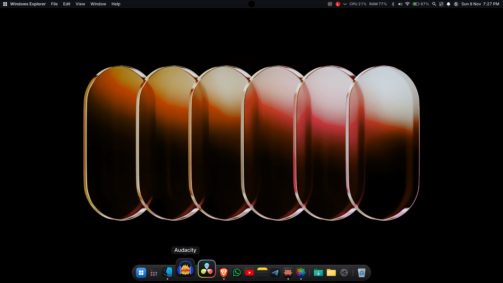
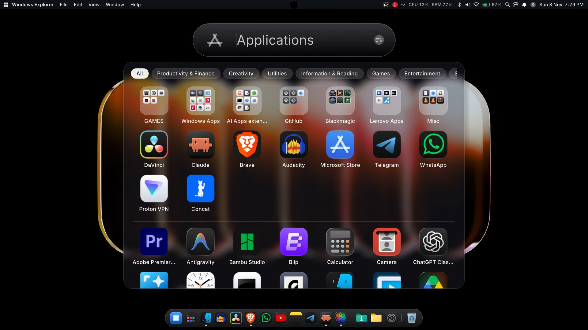
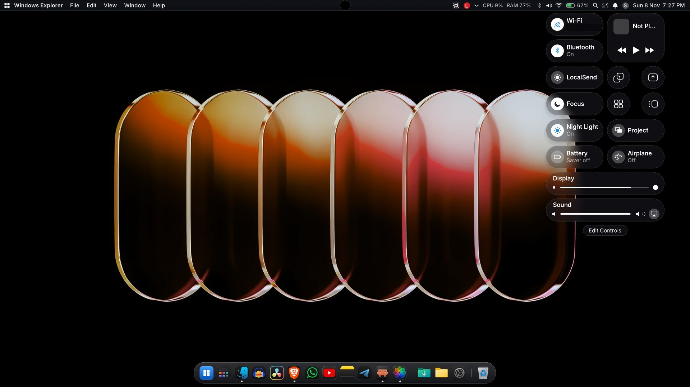
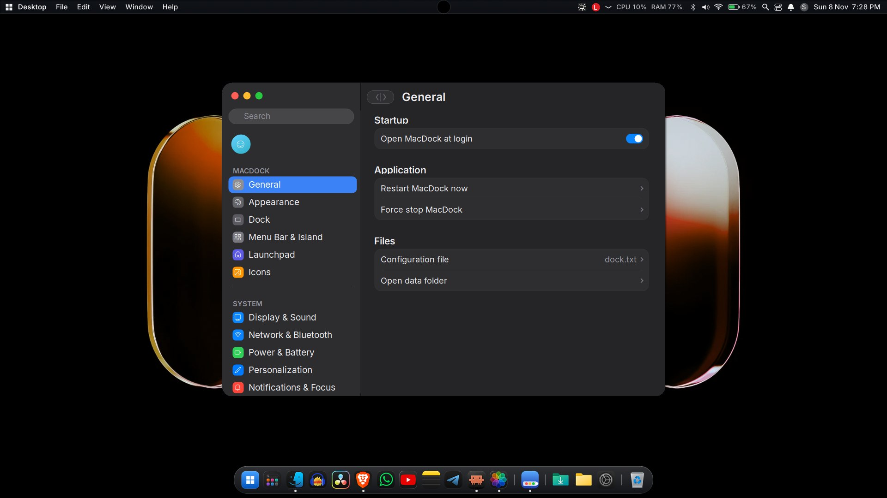

The Mac dock, on Windows 11.
A macOS-style dock and menu bar for your desktop. Runs without admin rights or an SDK.
Windows 11 (Windows 10 mostly works) · x64 · .NET Framework 4.x

A macOS-style dock and menu bar for your desktop. Runs without admin rights or an SDK.
Windows 11 (Windows 10 mostly works) · x64 · .NET Framework 4.x
Icons grow as you move across them.

All your apps in one full-screen grid.

Quick settings from the menu bar.

Light and dark icons, start at login, and more.

MacDock-v1.8.zip from the Releases page.Install.bat. If SmartScreen appears, click More info, then Run anyway.It hides and replaces the taskbar, which some scanners treat as suspicious. See the README on GitHub for details and how to allow it.
Run MacDock.exe /restore. Quitting MacDock from its menu restores the taskbar automatically.
Run Uninstall.bat. It restores the taskbar and removes autostart and the shortcut.